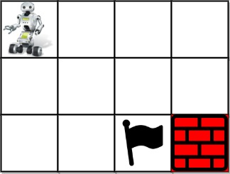
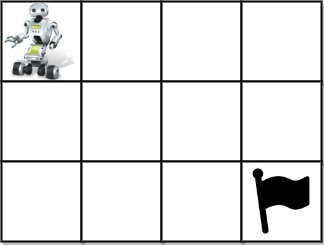
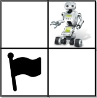

| Category | Difficulty | Likes | Dislikes |
|---|---|---|---|
| Algorithms | Hard | 5444 | 197 |
databricks | facebook | google | amazon | microsoft | goldman-sachs | bloomberg
You are given an m x n integer array grid where grid[i][j] could be:
1 representing the starting square. There is exactly one starting square.2 representing the ending square. There is exactly one ending square.0 representing empty squares we can walk over.-1 representing obstacles that we cannot walk over.Return the number of 4-directional walks from the starting square to the ending square, that walk over every non-obstacle square exactly once.
Example 1:

Input: grid = [[1,0,0,0],[0,0,0,0],[0,0,2,-1]]
Output: 2
Explanation: We have the following two paths:
1. (0,0),(0,1),(0,2),(0,3),(1,3),(1,2),(1,1),(1,0),(2,0),(2,1),(2,2)
2. (0,0),(1,0),(2,0),(2,1),(1,1),(0,1),(0,2),(0,3),(1,3),(1,2),(2,2)Example 2:

Input: grid = [[1,0,0,0],[0,0,0,0],[0,0,0,2]]
Output: 4
Explanation: We have the following four paths:
1. (0,0),(0,1),(0,2),(0,3),(1,3),(1,2),(1,1),(1,0),(2,0),(2,1),(2,2),(2,3)
2. (0,0),(0,1),(1,1),(1,0),(2,0),(2,1),(2,2),(1,2),(0,2),(0,3),(1,3),(2,3)
3. (0,0),(1,0),(2,0),(2,1),(2,2),(1,2),(1,1),(0,1),(0,2),(0,3),(1,3),(2,3)
4. (0,0),(1,0),(2,0),(2,1),(1,1),(0,1),(0,2),(0,3),(1,3),(1,2),(2,2),(2,3)Example 3:

Input: grid = [[0,1],[2,0]]
Output: 0
Explanation: There is no path that walks over every empty square exactly once.
Note that the starting and ending square can be anywhere in the grid.
Constraints:
m == grid.lengthn == grid[i].length1 <= m, n <= 201 <= m * n <= 20-1 <= grid[i][j] <= 2